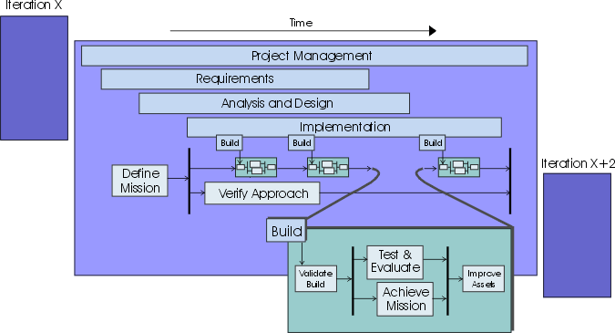

|
Software is refined through iterations in the RUP software development lifecycle. The testing lifecycle benefits from
following an equivalent iterative approach in this process environment. In each iteration, the software development
team produces one or more builds, with each build being a potential candidate for testing.
The focus and objectives of the development team differ from iteration to iteration. Therefore, the test team members
must structure their test effort accordingly. We suggest that you keep the amount of upfront, detailed test planning
and design to a minimum and, where you need to do this, that you aim to produce this work as close as possible to the
time it will be used. We also recommend that you address upfront, detailed test development no earlier than one
iteration in advance.
Additions, refinements, and deletions are made to the tests that are implemented and executed for each build. Some of
these test are retained and accumulate in a body of tests, which are used for regression testing subsequent builds used
in each future test cycle. This approach reworks and revises the tests throughout the process, just as the software
itself is revised. There is no frozen software specification and there are no frozen tests. The following figure
illustrates how tests evolve over time.

This iterative approach-coupled with the use of component architectures-necessitates that you consider testing for
regressions in product quality in each subsequent build. Any of the tests developed in iteration X are potential
candidates for regression testing in iteration X+1, and in iteration X+2, and so on. When the same test is likely to be
repeated several times, it's worthwhile to consider automating the test. Test automation provides an approach to the
repeated testing of usage scenarios and that frees testing staff to explore testing in new functional areas.
Look at the lifecycle of testing without considering the rest of the project. The following figure shows the work
detail breakdown for the Test discipline in a given iteration.

This lifecycle aligns with the iteration cycle that the rest of the development team follows. The Iteration begins with
an investigation by the test team, who negotiates with the project manager and other stakeholders regarding the most
useful testing work to undertake in the forthcoming iteration. Most test team members play a part in this work effort.
Usually each iteration contains at least one test cycle, as shown in the next figure. It's a fairly typical practice
for multiple builds to be produced for each Iteration and for a test cycle to be aligned with each build. However, in
some cases, specific builds are not tested.
With the core test effort underway, a subset of the team members may be investigating new testing techniques. This
effort attempts to prove that the techniques work so the team can rely on them, especially in subsequent iterations.

The testing lifecycle is part of the software lifecycle; they should start in an equivalent timeframe. The design and
development process for tests can be as complex and arduous as the process to develop the software product itself. If
tests do not start in line with the first executable software releases, the test effort will delay the discovery of too
many problems until late in the development cycle. This often results in a long bug-fixing period being appended to the
end of the development schedule, which defeats the goals and eliminates the benefits of iterative development.
Although test planning and defining tasks started early can expose important faults or flaws in the early specification
work, we recommend you carefully choose the testing work you do in advance. As well as the potential for rework already
mentioned, the test team needs to be careful to maintain their role as impartial quality advisors, and not derail the
early requirements and design tasks by acting as "quality police". By their very nature, the project team's early
attempts to understand the problem and solution spaces will be flawed. Making unreasonable demands about the quality of
this early work risks alienating the test team from the rest of the development group.
Problems found during an iteration can be solved within the same iteration or postponed until the next-a decision that
ultimately rests with the Project Manager role. One of the major tasks for the test team and project managers is to
measure how complete the iteration is by verifying that the iteration objectives, as outlined in the Iteration Plan,
were met. There is ongoing "requirements discovery" from iteration to iteration. It's something you need to be aware of
and be prepared to manage.
How you will perform tests depends on several factors:
-
your application domain
-
your budget
-
your company's policy
-
your risk tolerance
-
your staff
How much you invest in testing depends on how you evaluate quality and tolerate risk in your particular environment.
|